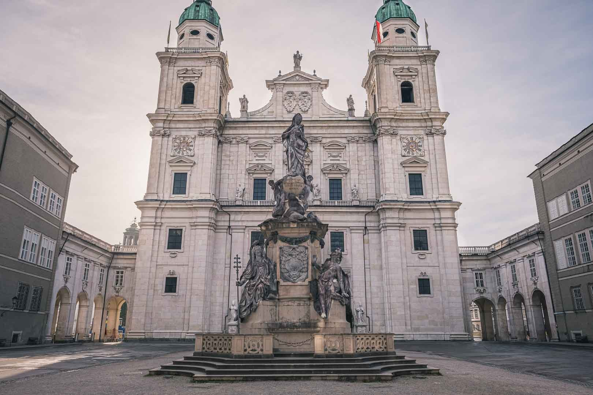
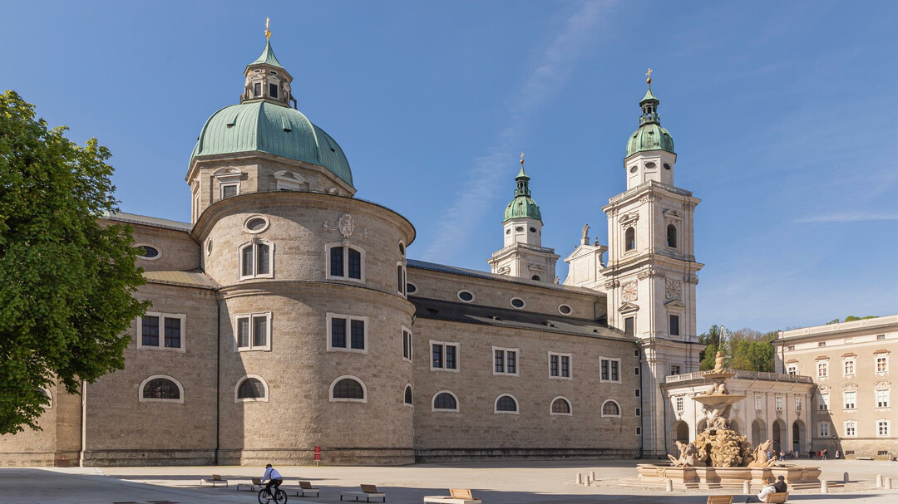

La Catedral de Salzburgo es un impresionante edificio monumental del Barroco temprano. Los visitantes son recibidos por la magnífica fachada principal de mármol de la montaña “Untersberg”. Cuatro estatuas monumentales miran desde la fachada hacia abajo: los apóstoles Pedro y Pablo con llave y espada, así como los dos patronos de la región San Ruperto y San Virgilio con la caja de sal y la maqueta de una iglesia. Los dos escudos heráldicos en el frontón hacen referencia a los dos constructores de la catedral, Markus Sittikus y Paris Lodron. La Plaza de la Catedral con la Columna Mariana conforma el atrio –y es todos los años el escenario de la obra “Jedermann” de los Festivales de Salzburgo y del popular mercado de Navidad.
 